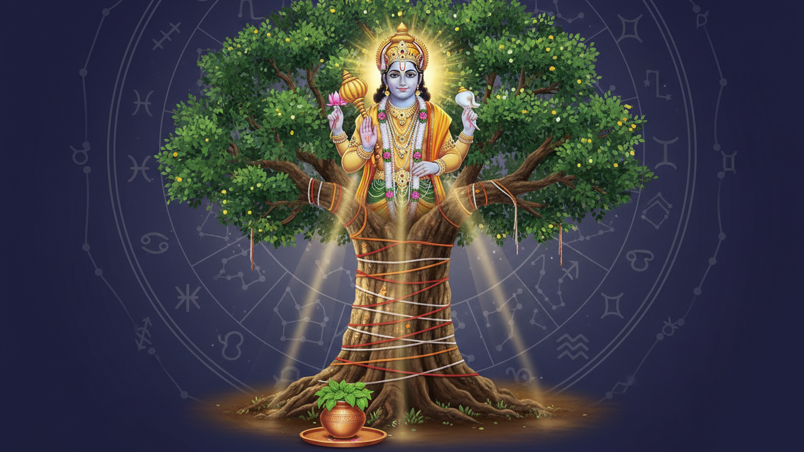

1. प्रस्तावना
वैदिक ज्योतिष के अनुसार, वर्ष 2026 केवल पंचांग बदलने का वर्ष नहीं है, बल्कि यह हमारे संचित कर्मों को सक्रिय करने वाला एक 'ब्रह्मांडीय ट्रिगर' है। जून 2026 का महीना इस वर्ष का सबसे महत्वपूर्ण 'ऊर्जा संचय' (Energetic Bottleneck) काल होने जा रहा है। इस दौरान ग्रहों की स्थिति ऐसी है कि यह हमें भावनात्मक गहराई और मानसिक सक्रियता के एक जटिल संगम पर खड़ा करेगी। यह समय हमारे अवचेतन मन में दबे 'संस्कारों' (Karmic Impressions) को बाहर लाने और उन्हें आध्यात्मिक अनुशासन के माध्यम से संतुलित करने का है।

2. 2026 के मुख्य ग्रह गोचर: एक विहंगम दृष्टि
वर्ष 2026 की खगोलीय घटनाएं हमारे जीवन के विभिन्न पहलुओं, विशेषकर निर्णय लेने की क्षमता और मानसिक स्थिरता को प्रभावित करेंगी। जून के महत्वपूर्ण बदलावों के साथ पूरे वर्ष की प्रमुख घटनाओं का विवरण नीचे दी गई तालिका में है:
| ग्रह और गोचर | तिथि | ज्योतिषीय प्रभाव एवं विश्लेषण |
|---|---|---|
| गुरु का कर्क राशि में प्रवेश | 2 जून 2026 | गुरु की उच्च अवस्था; धन, परिवार और अंतर्ज्ञान (Intuition) का विस्तार। |
| मंगल का मिथुन में प्रवेश | 28 जून 2026 | मानसिक ऊर्जा में तेजी, संचार में आक्रामकता और वैचारिक उथल-पुथल। |
| बुध का कर्क में वक्री होना | 29 जून 2026 | तर्क पर भावनाओं का हावी होना; संचार में देरी और पारिवारिक चर्चाओं में संवेदनशीलता। |
| शनि का मीन में वक्री होना | 27 जुलाई 2026 | उत्तरदायित्वों और आंतरिक विश्वासों का कड़ा पुनर्मूल्यांकन। |
| गुरु का सिंह राशि में प्रवेश | 31 अक्टूबर 2026 | नेतृत्व क्षमता, रचनात्मकता और सामाजिक प्रतिष्ठा में वृद्धि। |
3. गुरु का कर्क राशि में गोचर (2 जून 2026): समृद्धि का विस्तार
2 जून को बृहस्पति (गुरु) अपनी उच्च राशि कर्क में प्रवेश करेंगे। चूंकि कर्क राशि का स्वामी चंद्रमा है, जो हमारे मन का कारक है, इसलिए यह गोचर 'बुद्धि' और 'भावनाओं' के बीच एक आदर्श संतुलन बनाने का अवसर देगा।
- सकारात्मक बदलाव: यह गोचर वित्त, परिवार, उच्च शिक्षा और अचल संपत्ति के क्षेत्रों में बड़े लाभ लाएगा।
- आध्यात्मिक गहराई: यह समय आत्मा के पोषण और वंशानुगत कर्मों (Ancestral Karma) की शुद्धि के लिए सर्वोत्तम है। उच्च का गुरु हमारी अंतर्दृष्टि को तीव्र करता है, जिससे हम जीवन के कठिन निर्णयों में भी सही दिशा देख पाते हैं।
4. जून 2026 की चुनौतियां: मंगल और बुध का प्रभाव
जून के अंत में आकाश मंडल में एक 'द्वंद्व' की स्थिति बनेगी। एक ओर कर्क की संवेदनशीलता होगी, तो दूसरी ओर मिथुन की तीव्र मानसिक ऊर्जा।
- मंगल का मिथुन में प्रवेश (28 जून): यह गोचर मानसिक अशांति और शब्दों में तेजी लाता है। लोग बिना सोचे-समझे प्रतिक्रिया दे सकते हैं, जिससे संबंधों में दरार आ सकती है।
- बुध का वक्री होना (29 जून): बुध का वक्री होना 'भावनात्मक संचार' को जटिल बना देगा। पुरानी पारिवारिक शिकायतें फिर से उभर सकती हैं।
विशेष विशेषज्ञ सलाह: इस दौरान 'मौन' (Silence) धारण करना सबसे बड़ा उपाय है। किसी भी विवाद में उत्तर देने से पहले 10 सेकंड रुकें। संचार के डिजिटल साधनों का उपयोग कम करें और अपनी मानसिक ऊर्जा को बिखराव से बचाएं।
5. निर्जला एकादशी (25 जून 2026): अनुशासन और आत्म-नियंत्रण
25 जून को आने वाली निर्जला एकादशी केवल एक उपवास नहीं, बल्कि 'एकाग्रता का अनुशासन' (Discipline of Attention) है। मनोवैज्ञानिक रूप से, यह हमारे मस्तिष्क के 'डिफ़ॉल्ट मोड नेटवर्क' को तोड़कर हमें आदतों के चंगुल से मुक्त होने में मदद करती है।
- महत्व: भीमसेनी एकादशी की कथा सिखाती है कि संयम और दृढ़ संकल्प (Sankalp) किसी भी शारीरिक बाधा से बड़े हैं।
- उपवास के विभिन्न स्तर:
- निर्जला: बिना भोजन और जल के (पूर्ण शारीरिक और मानसिक शोधन)।
- जलाहार: केवल जल का सेवन।
- क्षीरभोजी: केवल दूध का सेवन, जो शरीर को शीतलता प्रदान करता है।
- फलाहार: अनाज त्यागकर केवल फल और मेवे।
- नक्तभोजी: सूर्यास्त से पूर्व केवल एक समय सात्विक और बिना अनाज का भोजन।
- पारण का समय: व्रत खोलने (Parana) का सटीक समय 26 जून, सुबह 05:25 से 08:13 के बीच है। इस समय सीमा का पालन करना आध्यात्मिक लाभ को पूर्ण करने के लिए अनिवार्य है।
6. वट पूर्णिमा 2026 (29 जून): प्रेम और समर्पण का पर्व
अधिमास (पुरुषोत्तम मास) के कारण इस वर्ष तिथियों को लेकर भ्रम की स्थिति है। 30 मई को 'अधि ज्येष्ठ पूर्णिमा' थी, जो केवल आंतरिक शुद्धि के लिए थी। व्रत और उत्सव के लिए 29 जून को 'शुद्ध ज्येष्ठ पूर्णिमा' ही मान्य है।
- मनोवैज्ञानिक महत्व (Grounding): वट वृक्ष (बरगद) अपनी अचल अवस्था और गहरी जड़ों के लिए जाना जाता है। इसकी पूजा करना हमारे अशांत मन को 'ग्राउंडिंग' प्रदान करता है।
- सावित्री-सत्यवान कथा का संदेश: इस कथा को केवल भक्ति नहीं, बल्कि 'संकट में रणनीतिक बुद्धिमत्ता' (Strategic Intelligence in Crisis) के रूप में देखें। यह सिखाती है कि कैसे स्थिर बुद्धि से मृत्यु (यानी असंभव संकट) को भी टाला जा सकता है।
- अनुष्ठान: कच्चा सूत (धागा) लपेटते हुए परिक्रमा करना हमारे बिखरे हुए विचारों को एक केंद्र (स्थिरता) से बांधने की प्रक्रिया है।
7. व्यावहारिक उपाय और सुरक्षात्मक अनुष्ठान
ग्रहों के नकारात्मक प्रभाव को कम करने के लिए इन्हें 'आध्यात्मिक विज्ञान' के रूप में अपनाएं:
- ऊर्जा संतुलन (Nazar Utarna): सात साबुत लौंग को पति या परिवार के सदस्य के सिर से सात बार उल्टा घुमाकर बाहर फेंकें। लौंग नकारात्मक कंपन (Vibrations) को सोखने की क्षमता रखती है।
- कर्मों का दान (Charity): गर्मी के प्रभाव और पितृ दोष की शांति के लिए पानी के घड़े (मटका), खरबूजे, छाता और पीले वस्त्रों का दान करें। यह चंद्र-गुरु के संतुलन को सुदृढ़ करता है।
- मंत्र शक्ति: 'ॐ नमो भगवते वासुदेवाय' मंत्र का 108 बार तुलसी माला से जाप करें। यह मंत्र राहु-केतु के भ्रम जाल को काटकर स्पष्टता प्रदान करता है।
- शिव अभिषेक: चंद्रमा और मंगल के द्वंद्व को शांत करने के लिए शिवलिंग पर कच्चा दूध और गंगाजल अर्पित करें।
8. निष्कर्ष और मुख्य बिंदु (Key Takeaways)
जून 2026 हमें अपनी आदतों (Habit Loops) को पहचानने और उन्हें 'कॉग्निटिव रीसेट' (Cognitive Reset) करने का सुनहरा अवसर देता है। ग्रहों की उथल-पुथल से डरने के बजाय, उसे आत्म-सुधार के लिए ईंधन के रूप में उपयोग करें। अनुशासन, मौन और दान के माध्यम से आप इस कठिन गोचर को भी समृद्धि में बदल सकते हैं।
मुख्य चेकलिस्ट (Takeaways):
- [ ] 25 जून: अपनी क्षमतानुसार एकादशी व्रत रखें और 26 जून को सुबह 05:25-08:13 के बीच पारण करें।
- [ ] 29 जून: वट पूर्णिमा पर बरगद की पूजा कर मानसिक स्थिरता और रणनीतिक बुद्धि का संकल्प लें।
- [ ] पूरे जून: विशेषकर 28 जून के बाद, क्रोध और त्वरित प्रतिक्रिया से बचने के लिए 'मौन' का अभ्यास करें।
Sources
- Nirjala Ekadashi 2026 Date: Know significance, puja timings, fasting ...
- Vat Purnima 2026: Celebrating Eternal Love And Devotion - Pandit Milind Guruji
- How Nirjala Ekadashi Fasting May Affect Mind and Emotions According to Astrology
- Nirjala Ekadashi: 3 Powerful rituals to perform on this sacred day ...
- Understanding Ekadashi: Fasting as a Tool for Mental Clarity
- Vat Purnima 2026: Check the correct date to observe Purnima Vrat ...
- 3 Auspicious astrological rituals to welcome Jupiter's Transit into ...
- Astrological Warning for June 2026: Dates Every Zodiac Sign Should Mark
- 2026 Planetary Transits (Gochar) Explained – Dates, Effects & Predictions - Astropatri
- 6 Remedies To Protect Your Husband From Evil Eye - The Times of India
- Nirjala Ekadashi 2026: Dates, Meaning, Vrat Katha & Puja Vidhi
- Ekadashi Tithi 2026 Dates List: Fasting Calendar and Timings May 29, 2026, Friday - Astroyogi.com
- Nirjala Ekadashi 2026: Date, Parana Time, Fasting Rules & Puja Vidhi - GaneshaSpeaks
- 2026 Nirjala Ekadashi Vrat, fasting date and Parana time for Chandigarh, Chandigarh, India - Drik Panchang
- 2026 Nirjala Ekadashi Vrat, fasting date and Parana time for Sunnyvale, California, United States - Drik Panchang
- 2026 Purnima Days | Pournami Days | Full Moon Days for Renton, Washington, United States - Drik Panchang
- Significance of Vat-Savitri Vrat - A Celebration of Matrimonial Bliss - Exotic India Art
- Nirjala Ekadashi | Meaning, Katha, & Benefits Explained - Cottage9
- Vat Savitri Puja: True Love Story of Savitri and Satyavan - from roots to rituals shrafest
- Savitri Vrat Katha: The Inspiring Story of Devotion and Love - My Pooja Box
- Vat Savitri Vrat 2025 - Divine Sansar UAE
- Vat Savitri Puja - Divine Rudraksha
- Jupiter Transit 2026 | Guru Transit Date, Time, Effects and Remedies - MyRatna
- Astrological Transits 2026: Key Planetary Shifts Ahead | A&A
- Life Gets So Much Better For 3 Zodiac Signs By The End Of June 2026 | YourTango
- 5 Zodiac Signs Experiencing The Best Horoscopes All Month In June 2026 | YourTango
- Before Monsoon 2026: 3 Zodiac Signs Most Likely to Experience Major Life Changes
- Libra June 2026 Horoscope: Professional Rise & Career Wealth - Astro Zindagi
- Planetary Transits 2026: Get Astrological Transits Dates | GaneshaSpeaks
- Auspicious Muhurat In June 2026 - Good Days And Dates for All Your Events! May 30, 2026, Saturday - Astroyogi.com
- Odia Calendar 2026: Kohinoor Calendar PDF Free Download 2026 - Calendar Odia
- Vat Savitri 2025: Rituals, Significance, and Jewellery Traditions
- How to Perform Vat Purnima Puja – Easy Guide for Devotion - Myomnamo
- Nirjala Ekadashi vrat rules that every beginner should know - Asttrolok
- 2026 Purnima Days | Pournami Days | Full Moon Days for Georgetown, Ascension, Saint Helena - Drik Panchang
- 2026 Purnima Days | Pournami Days for Kosti, White Nile, Sudan - Drik Panchang
- 2026 Purnima Days | Pournami Days for West Melbourne, Florida, United States - Drik Panchang
- Jupiter Enters Cancer June 2026 : Libra Ascendant : r/vedicastrologyexperts - Reddit
- Purnima Tithi 2026 Dates List: Significance, Fasting Calendar and Timings May 30, 2026, Saturday - Astroyogi.com
- List of Purnima Vrat 2026 - Anytime Astro
- 2026 Purnima Dates: Check month-wise full list of Poornima days with names and moon-rise timing
- Savitri and Satyavan: A Legendary Tale of Devotion and Triumph Over Death
- Savitri and Satyavan: The True Essence of Love and Friendship - Exotic India Art
- Rahu–Ketu Transit 2026: 4 Zodiac Signs Experience Destiny Shifts - The Economic Times
- Rahu-Ketu Transit 2026 | AjmerAstro
- June 29, 2026 Shubha Horai, Auspicious Times, Today Hora Table for New Delhi, NCT, India - Drik Panchang
- Chaturdashi Tithi 2026 – Dates, Auspicious Time And Festivals May 30, 2026, Saturday - Astroyogi.com
- Panchang Today, May 19, 2026: Shukla Paksh 3 (Tritiya), Mrigasira, Shubh Muhurat, Rahu Kaal and more - The Times of India
- today panchangam|eroju subha samayam|Telugu Calendar 2026|todaythidhi - YouTube